地址：青岛市山东路12号帝威大厦3e 微尘基金办公室
电话：0532-85830111
地址：青岛市山东路12号帝威大厦3e 微尘基金办公室
电话：0532-85830111

印度洋海啸时，青岛的一位普通市民，她数次不留名向灾区大额捐款。当工作人员问其姓名以便开具收据时，她留下了微尘的化名。后来，微尘扩散成一个爱心群体，频繁出现在青岛市各种公益活动中，是一群以救助弱小为己任，充满仁爱和良善的青岛人。
再后来，微尘扩展成一个关爱他人的爱心符号，以它命名的募捐箱、徽章走进岛城的大街小巷。
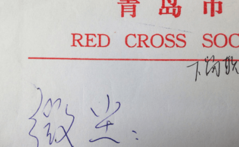
微尘本人签字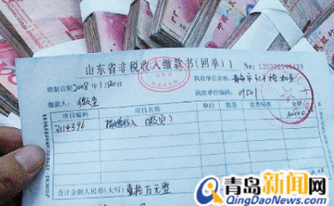
微尘的大额捐款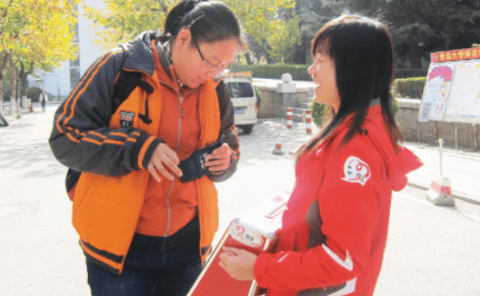
微尘捐款箱走进岛城大街小巷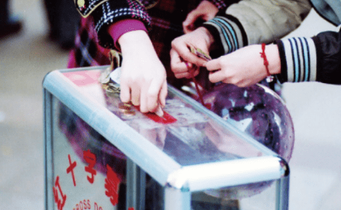
微尘捐款箱走进岛城大街小巷“微尘”以最高票当选全国 "十大社会公益之星” , 11 月“微尘”又荣获首届“中华慈善奖”
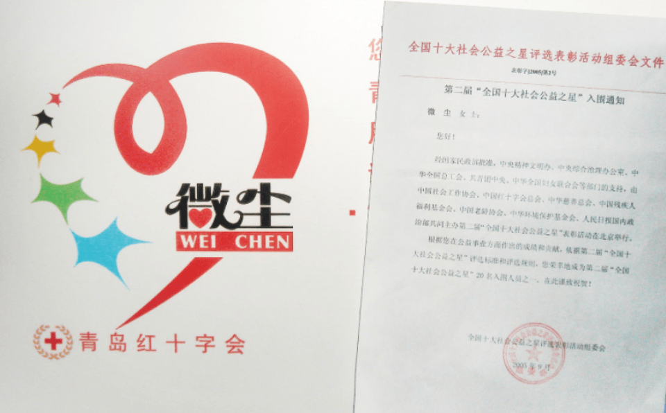
2005年微尘荣获全国十大公益之星获奖通知成为感动中国年度人物。中央领导人李长春同志在 《 人民日报 》 一版“我叫微尘”一文上批示：这是我们社会的正气歌
爱心要承，要发扬光大，需要一个组织、一个载体的运作。 2008 年，由认同“微尘”公益理念、自愿参与公益事业的十余位岛城爱心企业家共同在青岛市红十字会的倡导扶持下，发起成立了青岛红十字微尘基金。以“微尘有情，博爱无疆”为公益理念，重点关注儿童“生命、健康、教育”项目。
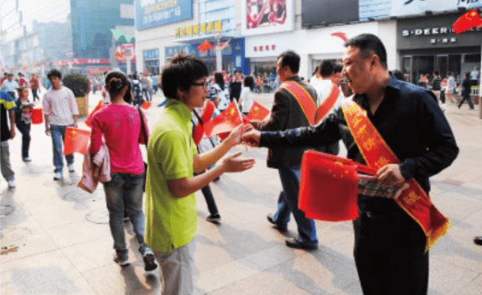
2010年10月1日微尘基金在台东步行街活动宣传微尘精神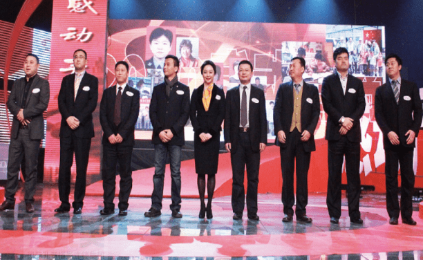
2011年1月10日微尘基金理事团获得“感动青岛群体”从成立的第一夭起，微尘基金常务理事团就定下了一个原则：
徽尘基金不在募捐款中提取管理费。所有善款全部都遵循捐赠意愿，百分之百用于救助项目。而微尘基金所有的运作费由理事们分摊，捐款真正做到了专款专用。
从那时起，爱心市民、企业和微尘基金的爱心理事们将他们的爱心源源不断汇入到基金中。微尘基金成为岛城众多爱心人士温馨的家。
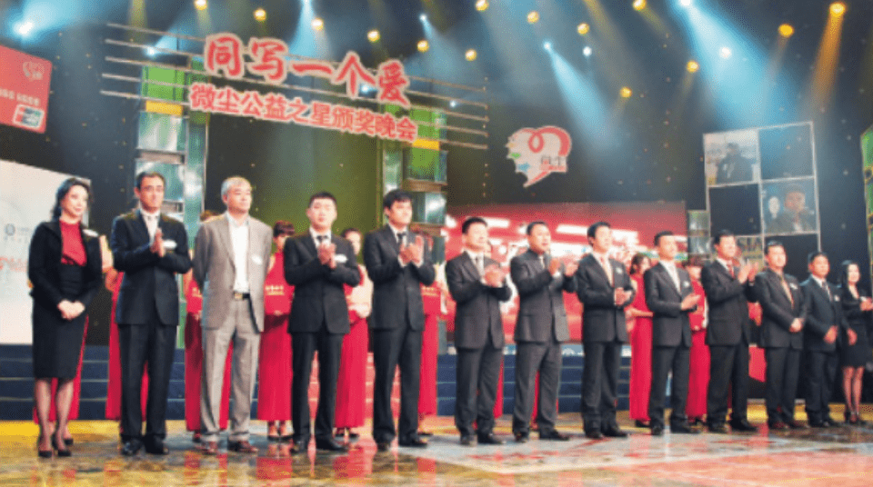
2010年10月19日红十字微基金爱心理事团获得青岛市第二届“十大微尘公益之星”人物奖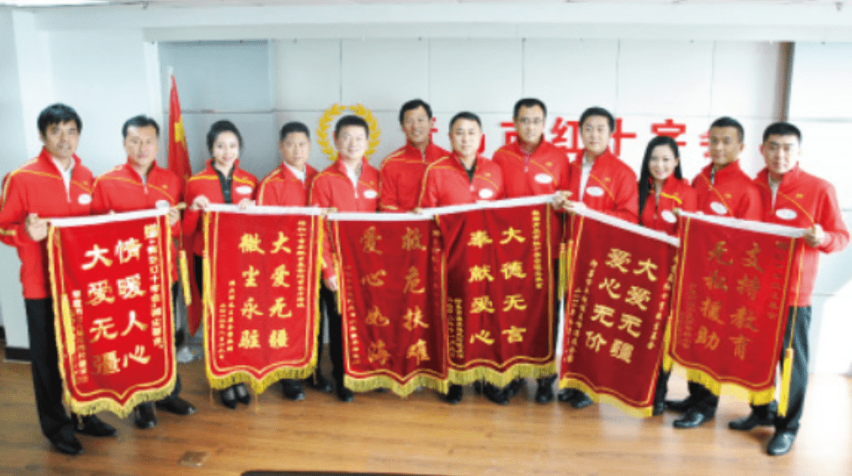
2010年10月16微尘基金理事们在红十字会接受来自各方的锦旗岁月不居，走到今年，青岛红＋字微尘基金已经走过十个年头。
十年坚守不忘初心，微尘基金始终践行着成立之初那份爱的承诺，身体力行的诊释着“微尘”的丰富含义。
十年来微尘基金扶危济困、奉献爱心的过程，就是凝聚正能量、创造正能量、传递正能量的过程，也是让“公益”二字深入人心的过程。一件件公益行动，让人们感受到微尘基金对公益的态度，付出的爱温暖着各式各样的群体，也感染着更多爱心人士加入公益事业。
如今红十字微尘基金已拥有数百位理事、 17支运作分基金，开展大病救助、自闭症教育培训、微尘阳光少年、大学生助学、博爱小学、微尘班等 20 余个项目，累计筹集爱心款物一亿余元。援助项目遍布山东、安徽、贵州、四川、云南、新疆、西藏等全国 17个省区，救助大病患者 1900 余名，资助博爱小学 58 所，微尘阳光少年 2 万余名，高中微尘班 11 个，直接受益人群达 10 余万人。
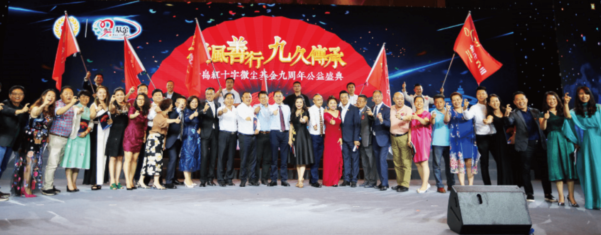
2017年6月22日微尘基金九周年公益盛典共筹款962.23万元微尘这粒爱的种子的集合体，在众人的培育下，茁壮成长，枝繁叶茂、花香满园。微尘基金现已发展成为山东乃至全国最具影响力的公益群体之一，“微尘”成为青岛公益事业最靓丽的名片。
在岁月的韶华里，将爱心流转～爱在右，心在左，走在生命路的两旁，随时撒种，随时开花。
将这一径长途点缀得花香弥漫，使得穿花拂叶的行人，有花可看，有爱可播。
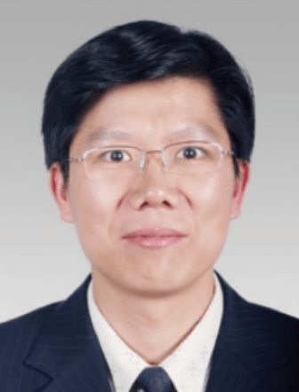
岳立成微尘公益基金会监事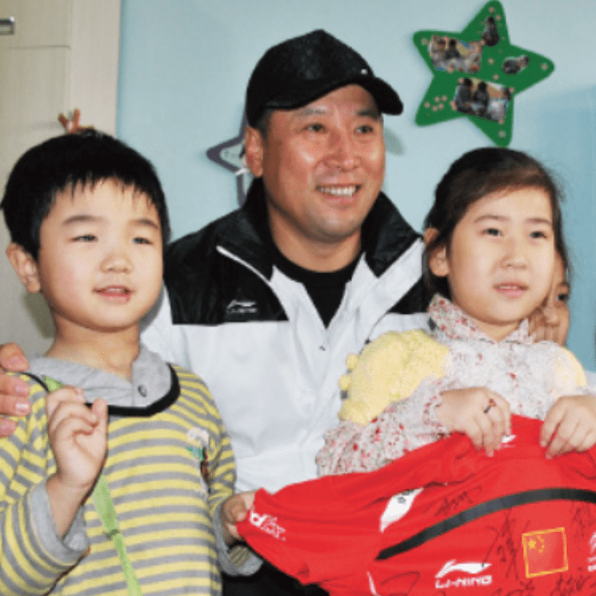
微尘推广大使
原中国羽毛球队总教练
现任中国奥委会专家委员会专家委员
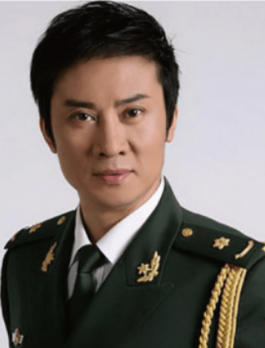
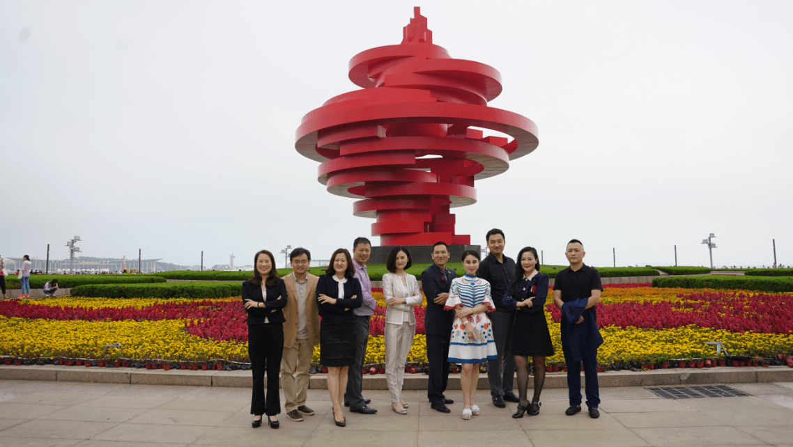
微尘公益基金会一组合影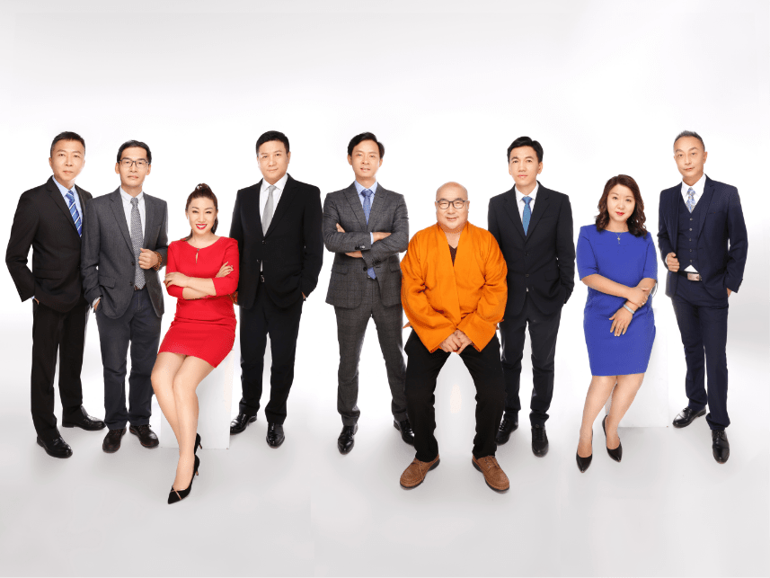
微尘公益基金会二组合影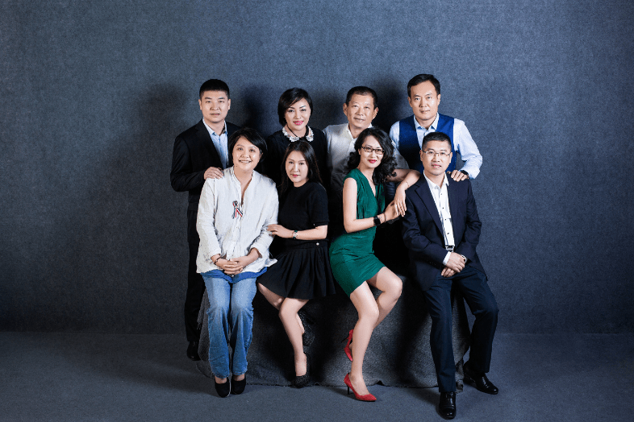
微尘公益基金会三组合影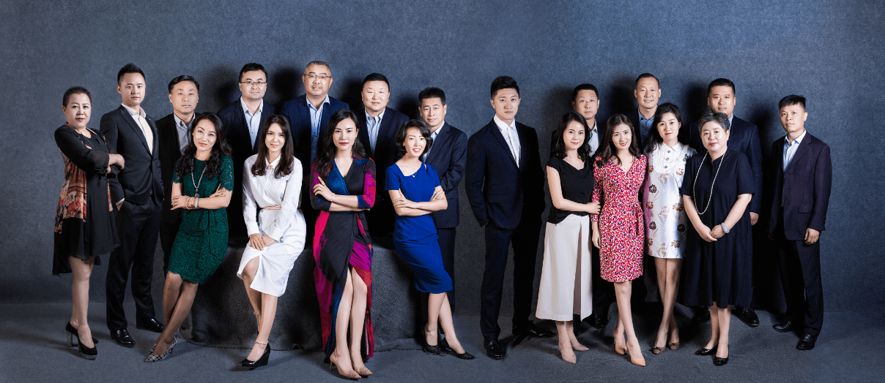
微尘公益基金会五组合影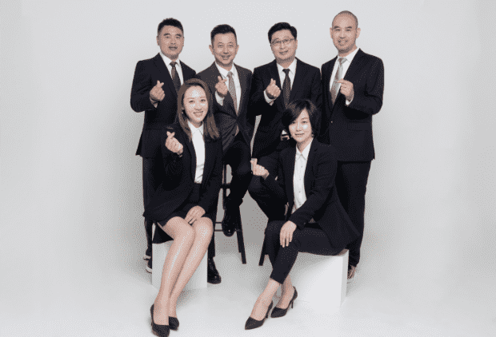
微尘公益基金会六组合影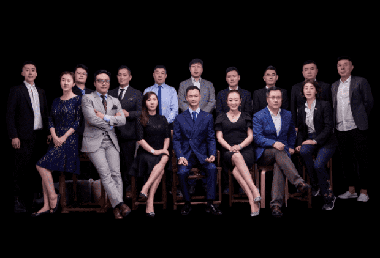
微尘公益基金会七组合影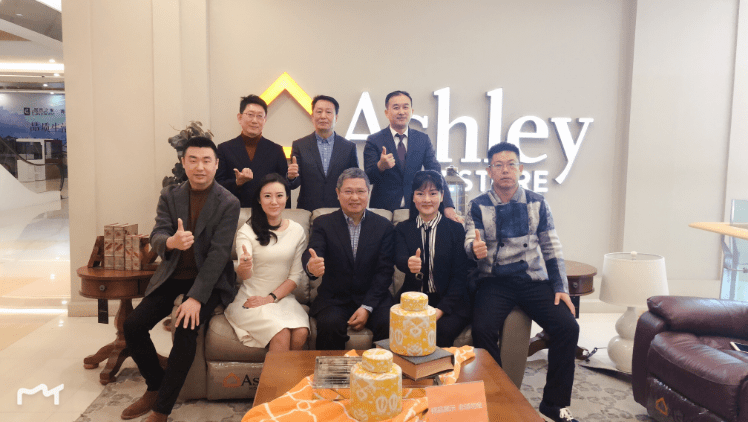
微尘公益基金会九组合影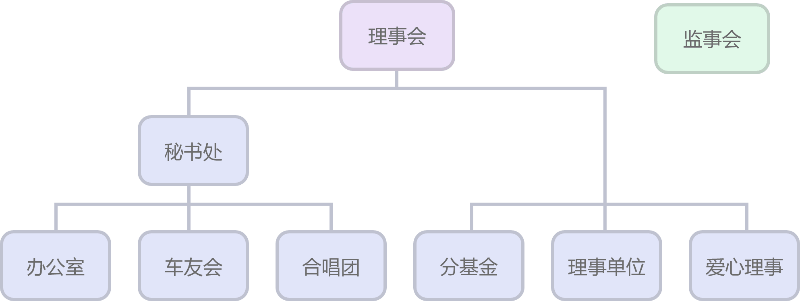
地址：青岛市山东路12号帝威大厦3e 微尘基金办公室
电话：0532-85830111